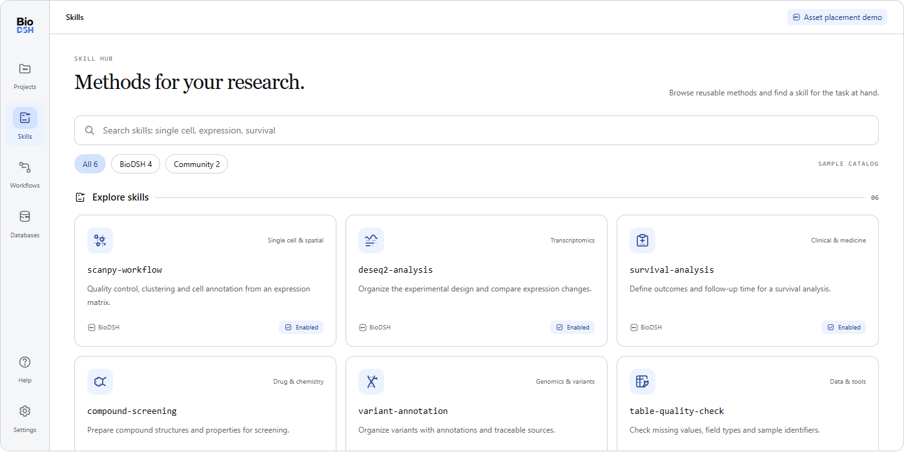

Organize around your research
Keep data, tasks and outputs in a clear project context.
From data to methods. From an exploration to a reusable workflow.
An agent desktop for clinicians, wet-lab scientists and bioinformatics researchers.
Built on DeepSeek Harness · Open source

 DATAMETHODSDISCOVERY
DATAMETHODSDISCOVERYSky blue, quiet grays and clear symbols bring projects, skills and workflows into one visual language.
1.0 interface design preview · Not in the current installer
Keep data, tasks and outputs in a clear project context.
Connect analysis methods through skills and explore tools for your work.
The new interface organizes methods as workflows. Import and learning actions remain in development.
Clean native vectors, dedicated light and dark palettes, and app marks tuned for small sizes. One shared design for the identity and the interface.
Current public desktop release: 0.3.0.
The Sky interface is being integrated. This preview does not represent features already shipped in the installer.